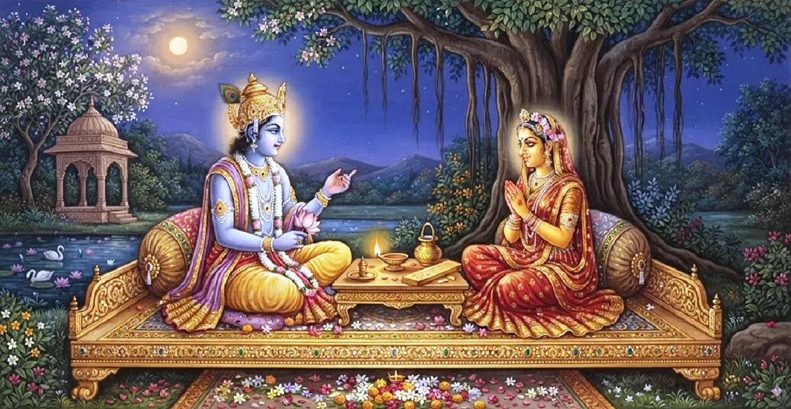

The Dialogue Between the God and the Goddess
The second chapter of the Kailasa Samhita reveals the sublime dialogue between Lord Shiva and Goddess Parvati on the peaks of Mount Kailasa.
Moved by infinite compassion for worldly souls, the Universal Mother questions Parvati's Lord to unravel the ultimate mystery of Omkara and Shaiva Tattva.
Lord Shiva responds by expounding the supreme non-dual truth, establishing Pranava as the source of all existence and wisdom.
Chapter 2 Highlights
Divine Abode
Set on the luminous peak of Kailasa, the cosmic seat of Supreme Consciousness.
Mother's Compassion
Goddess Parvati inquires on behalf of all bound souls seeking liberation.
Exposition of Omkara
Lord Shiva reveals Omkara as the primary sound-body of the Supreme Being.
Shiva-Shakti Unity
Demonstrates the absolute unity and non-difference between Shiva and Parvati.
Light of Knowledge
Dispels doubts regarding the nature of bondage, liberation, and cosmic order.
Gateway to Renunciation
Establishes the philosophical necessity for the ascetic path revealed in Chapter 3.
Core Topics in This Chapter
The Luminous Summit of Mount Kailasa
On the transcendent peak of Mount Kailasa, surrounded by divine sages and radiant light, Lord Shiva rests in eternal bliss.
This sacred atmosphere serves as the ideal realm where highest spiritual wisdom is communicated from the Lord to the Goddess.
Goddess Parvati's Compassionate Inquiry
Observing the sufferings of living beings trapped in the cycle of samsara, Goddess Parvati humbly approaches Lord Shiva.
She asks how souls wrapped in delusion can attain complete freedom through the understanding of Omkara and divine wisdom.
Lord Shiva's Discourse on Supreme Reality
Pleased with the Mother's compassionate query, Lord Shiva begins to unfold the subtle principles of Shaivism.
He explains that Supreme Being is non-dual, beyond form, yet manifests as the cosmic universe through His intrinsic power.
The Metaphysical Nature of Omkara
Lord Shiva declares Pranava (Om) to be His eternal sound manifestation, containing within itself all Vedas and manifestations.
Understanding the letters of Omkara leads the practitioner step-by-step from gross physical reality to ultimate transcendence.
The Inseparable Union of Shiva and Shakti
The discourse highlights that Shiva and Shakti are non-different, just as fire is non-different from its heat.
Shakti is the creative kinetic expression, while Shiva is the eternal unmoving Consciousness behind all creation.
Preparation for Spiritual Discipline
The dialogue clarifies that intellectual understanding alone is insufficient without pure heart and rigorous mental discipline.
Thus, the ground is prepared for detailing the practical lifestyle and ascetic vow required for total realization.
Transition to Chapter 3
Having established the metaphysical framework of Omkara and Shiva-Shakti, the text leads smoothly into Chapter 3, 'The Way of Sannyasa'.
There, the specific rules, conduct, and internal attitude of true renunciants will be elaborately detailed.
Key Teachings of Chapter 2
Omkara as Source
Omkara is the primordial vibration from which all divine knowledge flows.
Divine Grace
Spiritual wisdom is bestowed through the benevolent grace of Shiva and Shakti.
Non-Dual Reality
Supreme reality is one without a second, manifesting as Shiva and Shakti.
Illumination of Soul
True knowledge dissolves the ignorance causing worldly bondage.
Contemplative Focus
Meditation on Pranava aligns individual soul with Cosmic Consciousness.
Precursor to Sannyasa
Sets the spiritual mindset essential for formal renunciation.
Spiritual Reflection
The divine dialogue between Lord Shiva and Goddess Parvati emphasizes that liberation is attained when the mind grasps the non-dual truth of Omkara. As Mother Parvati intercedes for all creation, seekers are reminded to seek divine wisdom with compassion, devotion, and steadfast inner focus.
Living the Message of Chapter 2
Recognize the unified power of Shiva and Shakti in all aspects of nature and creation.
Meditation on Omkara should be practiced daily to harmonize thoughts and reach deeper states of awareness.
Cultivate universal compassion for all beings following the example of Goddess Parvati's divine inquiry.
Key Spiritual Concepts
The sacred conversation between Lord Shiva and Goddess Parvati.
The profound reality and essence of the sacred sound Om.
The dynamic cosmic power that creates, sustains, and dissolves.
The doctrine of non-duality between the individual soul and Supreme Shiva.
Divine compassion embodied by Mother Parvati towards all creatures.
The path of supreme spiritual knowledge leading to liberation.
Chapter Summary
Kailasa Samhita Chapter 2 highlights the dialogue between Lord Shiva and Goddess Parvati on Mount Kailasa. Prompted by Parvati's compassion for bound souls, Shiva expounds upon the true nature of Omkara and the non-duality of Shiva and Shakti. This discourse reveals Omkara as the source of all Vedic wisdom and prepares the seeker for the practical ascetic disciplines detailed in Chapter 3.
Frequently Asked Questions
1. What is the main subject of Kailasa Samhita Chapter 2?
Chapter 2 presents the divine dialogue between Lord Shiva and Goddess Parvati on Mount Kailasa, uncovering the sacred origin and ultimate philosophy of Omkara (Pranava).
2. Why did Goddess Parvati question Lord Shiva?
Goddess Parvati questioned Lord Shiva out of compassion for bound souls, seeking to reveal the direct path of wisdom and Pranava worship for their ultimate liberation.
3. How is Omkara described in this chapter?
Lord Shiva describes Omkara as the root of all Vedic sound (Sabda-Brahman), the source of creation, and the direct expression of the Supreme Non-Dual Reality.
4. What is the relationship between Shiva and Shakti according to this dialogue?
Shiva and Shakti are revealed as inseparable, like word and meaning, representing Pure Consciousness and its inherent creative Manifestation.
5. How does Chapter 2 lead into Chapter 3?
Having revealed the metaphysical nature of Omkara, Lord Shiva transitions into explaining the practical path of renunciation and discipline in Chapter 3, 'The Way of Sannyasa'.
6. What spiritual benefit comes from reflecting on this chapter?
Contemplating the divine exchange deepens one's understanding of Pranava and cultivates the inner purity required for highest spiritual wisdom.
“Shiva and Shakti are the dual aspects of the one Supreme Consciousness; contemplating their union through Omkara dissolves all illusion.”
Continue Through Kailasa Samhita
Chapter 2 explores the dialogue between the God and the Goddess. Continue to Chapter 3, The Way of Sannyasa.